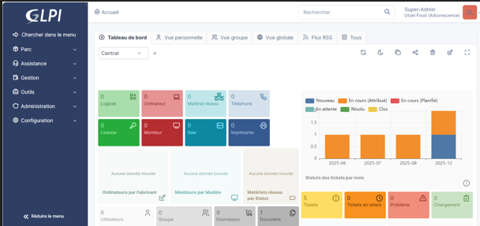

SYSTÈMES · GESTION DE PARC · ITSM
Installation et configuration de GLPI
Projet pratique autour du déploiement d’une application de gestion de parc et de tickets sur un environnement Linux virtualisé.
APACHE · PHP · MARIADB · ADMINISTRATION
01 — Objectifs
- Déployer une application web de gestion de services informatiques.
- Comprendre les dépendances entre GLPI, le serveur web, PHP et la base de données.
- Documenter les difficultés de déploiement et les contrôles de sécurité pertinents.
02 — Environnement technique
- Système : Linux sur machine virtuelle.
- Serveur web : Apache.
- Application : GLPI 11.
- Base de données : MariaDB.
- Composants : PHP et configuration des accès applicatifs.
03 — Démarche et diagnostic
Le travail a couvert l’installation du serveur web et de l’application, la configuration des chemins d’accès, les permissions de fichiers et des essais de configuration SMTP.
Les difficultés rencontrées autour du chemin public de GLPI, des permissions et de l’authentification SMTP sont documentées comme des éléments de diagnostic. Elles ne sont pas présentées comme résolues lorsque les journaux finaux ne sont plus disponibles.
04 — Capture de l’interface

La machine virtuelle et les journaux d’origine ne sont plus disponibles. Les résultats détaillés des tests et la résolution finale des problèmes ne peuvent donc pas être vérifiés rétrospectivement.
05 — Sécurité et bonnes pratiques
- Limiter les permissions des fichiers au strict nécessaire.
- Éviter d’exposer les fichiers internes de l’application.
- Vérifier la configuration HTTPS avant toute exposition du service.
- Maintenir GLPI, PHP et les composants système à jour.
- Ne pas publier de mots de passe, jetons ou données sensibles dans les captures.
06 — Bilan et apprentissages
Ce projet pédagogique m’a permis d’aborder le déploiement d’une application de gestion informatique dans un environnement virtualisé sous Linux, en m’appuyant sur Apache et MariaDB. Il m’a aussi permis d’approfondir la démarche de diagnostic des chemins d’accès, permissions de fichiers et paramètres SMTP.
Cette documentation est rédigée rétrospectivement à partir du support du projet et des éléments conservés. Les tests finaux ne peuvent pas être revérifiés, car l’environnement virtuel d’origine n’est plus disponible.